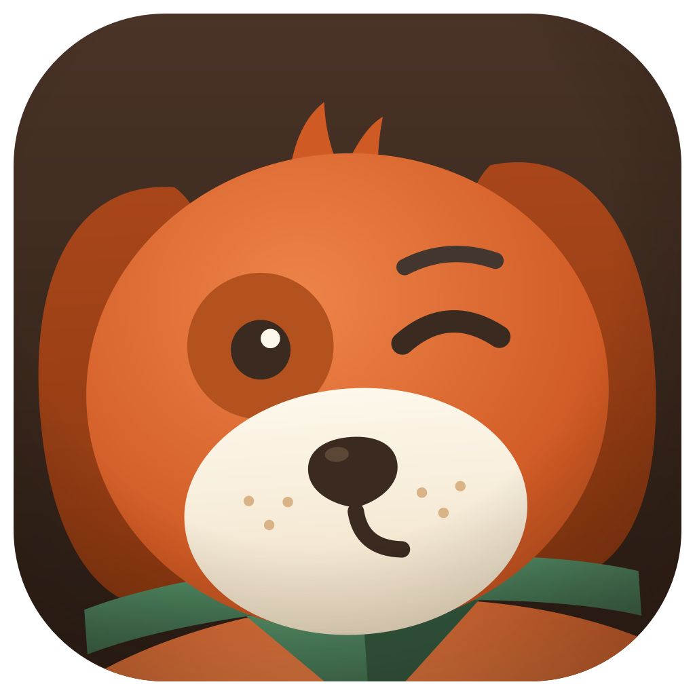

FilouLe Bureau qui déborde de captures d'écran, les Téléchargements pleins d'installeurs et de PDF : Filou analyse tout, propose un plan de dossiers, tu décoches ce que tu veux épargner, il range. Et tout s'annule.
Gratuit · signé et notarisé par Apple · macOS Apple Silicon
Filou montre d'abord ce qu'il compte faire : des catégories claires avec le détail des fichiers. Tu décoches ce que tu veux laisser tranquille, puis il déplace.
Claude regroupe par vrais thèmes : les factures ensemble, un dossier par projet, des arborescences propres. Seuls les noms de fichiers lui sont envoyés, jamais le contenu.
Tu écris tes habitudes en français libre, elles priment sur tout. Et tu choisis le niveau de détail : Simple, Équilibré ou Maniaque.
Chaque rangement est consigné au journal. Un clic remet les fichiers à leur place et efface les dossiers créés devenus vides.
Pas de serveur, pas de compte, pas de télémétrie. L'IA passe par ton abonnement Claude ou ta clé, stockée dans le trousseau du système.
Médor range ta boîte mail, Flash trie tes photos, Filou s'occupe de tes fichiers. Même philosophie : tout local, tout annulable.
Il inventorie les fichiers en vrac du Bureau et des Téléchargements, sans toucher aux dossiers existants.
Le plan s'affiche par catégories. Ce qui est coché sera rangé, le reste ne bouge pas.
Les dossiers se créent, les fichiers glissent dedans, le journal garde la trace. Regret ? Tout s'annule.
Filou ne lit que les noms de tes fichiers, jamais leur contenu. Si tu actives l'IA, seuls ces noms transitent vers Claude, avec ton propre compte. Sans IA, un classement local s'applique et rien ne quitte ta machine.